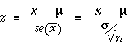

If you don't want to print now,
Tests about numerical populations
The most important characteristic of a numerical population is usually its mean, µ. Hypothesis tests therefore usually question the value of this parameter.
Null and alternative hypotheses
Two-tailed tests about a population mean involve the hypotheses
H0 : μ = μ0
HA : μ ≠ μ0
where µ0 is the constant that we think may be the true mean.
In a one-tailed test, the alternative hypothesis involves only high (or low) values of µ, such as
H0 : μ = μ0
HA : μ > μ0
Hypotheses and p-value
We initially assume that the population standard deviation σ is a known value. The null hypothesis is usually
H0 : µ = µ 0
The test is based on the sample mean,  .
This
has a distribution that is approximately normal and has mean and standard
deviation
.
This
has a distribution that is approximately normal and has mean and standard
deviation
| = μ |
| = |
Since the distribution of  is fully known when H0 is true, a tail area of its distribution
gives the p-value for the test. The tail of the distribution to use
depends on the form of the alternative hypothesis.
is fully known when H0 is true, a tail area of its distribution
gives the p-value for the test. The tail of the distribution to use
depends on the form of the alternative hypothesis.


Statistical distance and p-value
If σ is a known value, the calculation to find the p-value for testing the mean can be expressed in terms of the general formula for the statistical distance between a parameter and its estimate,

In the context of a test about means,

Since z has a standard normal(0, 1) distribution when the null hypothesis holds, it can be used as a test statistic and the p-value for the test can be determined from its tail areas.

For a two-tailed test, the p-value is the red tail area.
Example
The mean of a sample of n = 30 values is 16.8. Does the population have mean µ = 18.3 and standard deviation σ = 7.1, or is the mean now lower than 18.3?
H0 : µ = 18.3
HA : µ < 18.3
The p-value for the test is shown below:

The p-value can be evaluated using the statistical distance of 16.8 from 18.3 (a z statistic),

The p-value is reasonably large, meaning that a sample mean as low as 16.8 would not be unusual if µ = 18.3, so there is no evidence against µ = 18.3.
Test statistic if σ is unknown
In practical problems, the value of σ is rarely known so we cannot use

as a test statistic — it cannot be evaluated even when H0 is true. Instead, we must use a closely related type of 'statistical distance' between the sample mean and µ0,

where s is the sample standard deviation. This test statistic no longer has a normal distribution — it has greater spread due to the extra variability that results from estimating s, and has a standard distribution called a t distribution with (n - 1) degrees of freedom.

Finding a p-value from the t distribution
When testing the value of µ when σ is unknown, we use the test statistic

This has a t distribution (with n − 1 degrees of freedom) when H0 is true, so the p-value is found from a tail area of this distribution.
One-tailed test
H0 : μ = μ0
HA : μ < μ0
The steps for testing these hypotheses are shown in the diagram below.

Example
Consider a sample of n = 13 values with mean  = 16.14
and standard deviation s = 2.15. A test for whether the population mean
is more than 15.0 uses the hypotheses:
= 16.14
and standard deviation s = 2.15. A test for whether the population mean
is more than 15.0 uses the hypotheses:
H0 : µ = 15
HA : µ > 15
Since the population standard deviation, σ, is unknown, the test must be based on a t statistic.

Symmetric hypotheses
In some situations there is a kind of symmetry between two competing hypotheses. For example, if two candidates, A and B, stand in an election and π is the population proportion who will vote for A, we are interested in which candidate will win:
H1 : π > 0.5
H2 : π < 0.5
Null and alternative hypotheses
In statistical hypothesis testing, the two hypotheses are not treated symmetrically in this way. Instead, we ask whether the sample data are consistent with one particular hypothesis (the null hypothesis, denoted by H0). If the data are not consistent with H0, then we can conclude that the competing hypothesis (the alternative hypothesis, denoted by HA) must be true.
The two possibilities are:
We should never conclude that H0 is likely to be true.
Example
Consider a test for whether a population mean is zero:
H0 : µ = 0.0
HA : µ ≠ 0.0
Based on a random sample, we might conclude:
Describing the credibility of the null hypothesis
A p-value is a numerical description of the strength of the evidence against H0 that is provided by the data .
A p-value is a numerical summary statistic that describes the strength of the evidence against H0
P-values are interpreted in the same way for all hypothesis tests.
Interpretation of p-values
In all hypothesis tests,
Distribution of p-values
P-values are found from random samples so they have distributions. Regardless of the hypothesis test,

Simulation
Consider a test for whether a population mean is zero:
H0 : µ = 0.0
HA : µ ≠ 0.0
The diagram below shows the p-values from a t-test for these hypotheses, based on several random samples from a normal distribution for which H0 is true. Note that the p-value is equally likely to be anywhere between 0 and 1.

The next diagram shows p-values calculated in the same way, but based on random samples from a normal distribution for which HA is true. Note that the p-value is more likely to be near zero.

Although it is possible to obtain a low p-value when H0 holds and a high p-value when HA holds, low p-values are more likely under HA than under H0.
P-values and probability
When H0 holds,

On the other hand, when HA holds, p-values are more likely to be near zero and
Examples
Of course, we may be wrong. A p-value of 0.0023 could arise when either H0 or HA holds but it is more likely under HA. And a p-value of 0.4 could also arise when either hypothesis is true.
Interpretation of p-values for all tests
| p-value | Interpretation |
|---|---|
| over 0.1 | no evidence that the null hypothesis does not hold |
| between 0.05 and 0.1 | very weak evidence that the null hypothesis does not hold |
| between 0.01 and 0.05 | moderately strong evidence that the null hypothesis does not hold |
| under 0.01 | strong evidence that the null hypothesis does not hold |
Applying the general properties of p-values to different tests
P-values for all hypothesis tests have the properties that were described earlier in this section. You should now be able to interpret any p-value if you know the null and alternative hypotheses that it tests. (A statistical computer program is generally used to perform hypothesis tests, so knowing the details of how the p-value is obtained is of little importance.)
Example
The following data have been collected. Are they sampled from a normally distributed population?
| 41.9 90.6 29.9 10.2 33.7 26.9 88.5 6.5 16.6 19.2 12.6 32.0 3.6 8.1 |
68.1 57.9 -3.0 42.2 14.5 25.7 28.1 78.4 126.2 42.0 66.6 20.6 54.6 31.7 |
2.3 45.5 55.5 37.2 51.6 97.1 80.3 41.1 7.3 31.0 30.2 1.7 27.0 38.0 |
144.9 27.8 121.9 26.0 -11.5 15.5 16.9 27.3 23.9 61.1 68.2 10.0 37.8 77.1 |
24.3 63.2 -0.6 1.0 12.1 134.5 53.8 60.4 9.0 -6.4 31.0 -2.8 114.6 19.8 |
11.5 39.6 59.0 20.7 37.3 23.1 32.7 13.0 70.6 87.3 -3.2 -20.8 119.1 -0.1 |
104.4 -4.6 72.5 7.7 31.4 36.9 47.2 74.7 29.1 70.5 77.7 81.0 191.8 1.6 |
-0.8 59.4 -2.2 -12.5 81.6 44.0 63.6 114.3 33.6 83.0 70.8 50.1 55.8 28.3 |
-7.9 51.3 37.7 48.3 88.9 59.4 126.9 35.0 51.0 91.1 -2.7 79.2 0.1 12.9 |
16.2 23.0 22.4 64.4 10.2 7.6 27.7 8.0 23.5 25.3 22.5 |
The diagram below shows a histogram of the data and the best-fitting normal distribution. Could the skewness in the data have occurred by chance from a normal population?

The Shapiro-Wilkes W test can be used to test whether data come from a normal distribution:
H0 : population distribution is normal
HA : population distribution is not normal
Computer software reports the p-value for this test as "under 0.01". We conclude that the probability of obtaining such a non-normal looking sample from a normal distribution is less than 0.01, so there is strong evidence that the data do not come from a normal population.